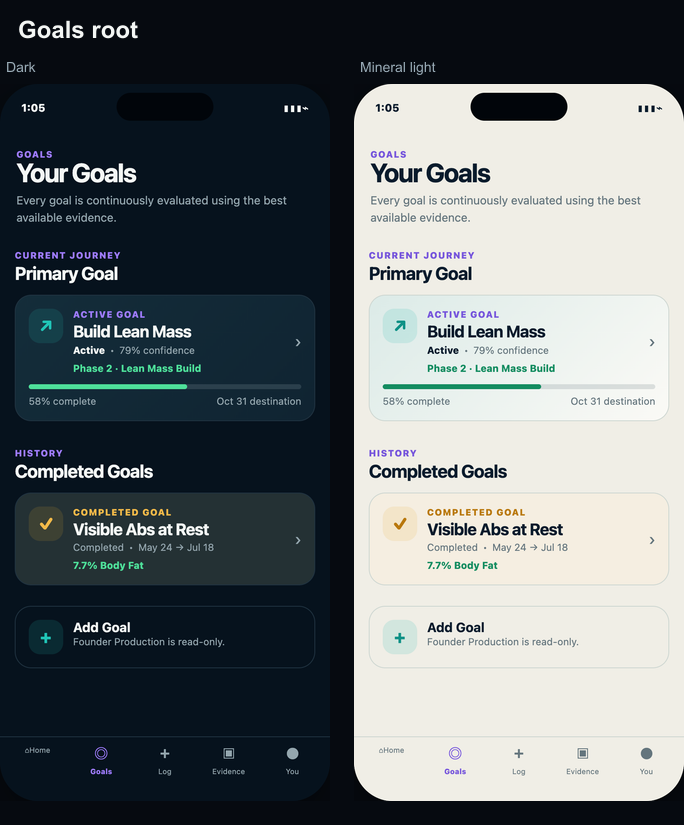
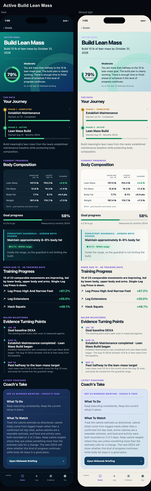
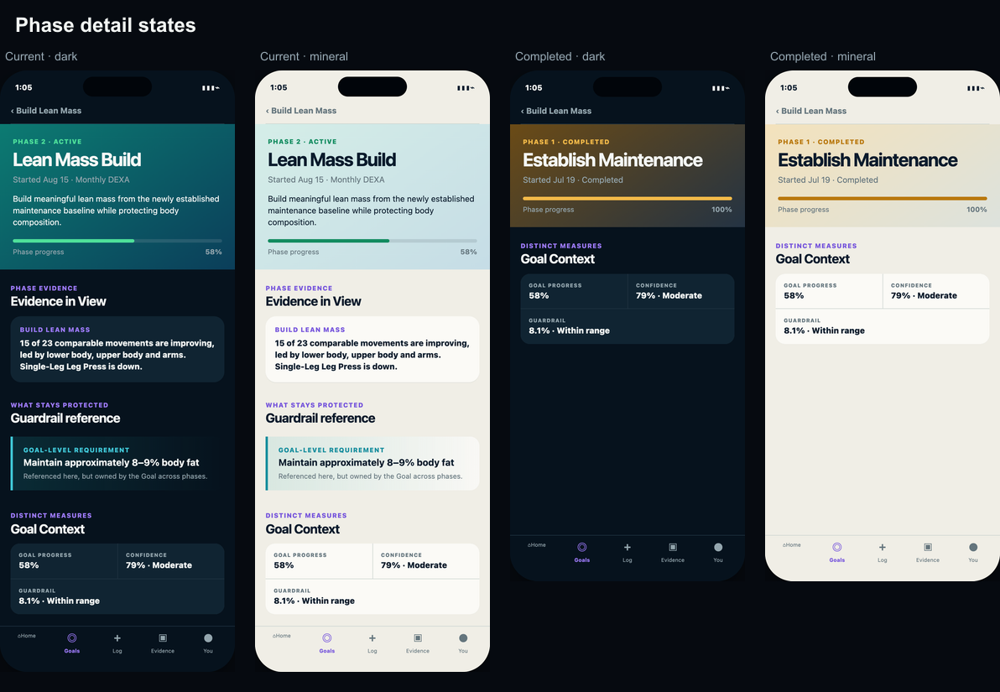
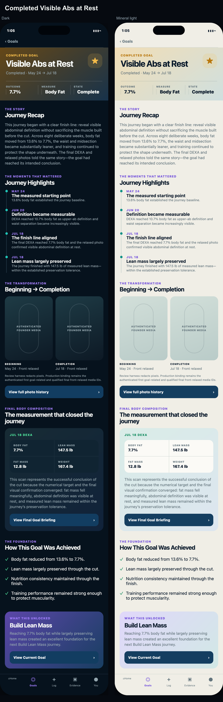
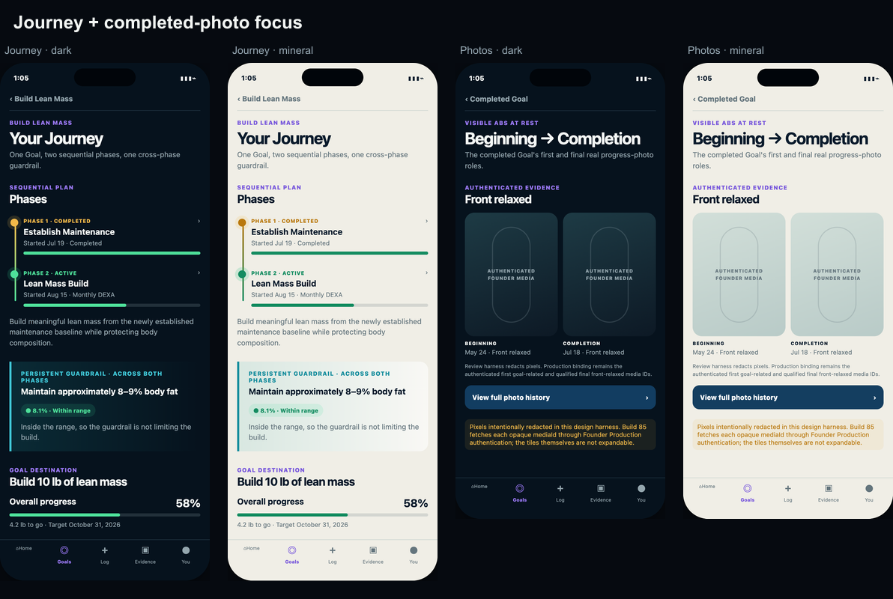
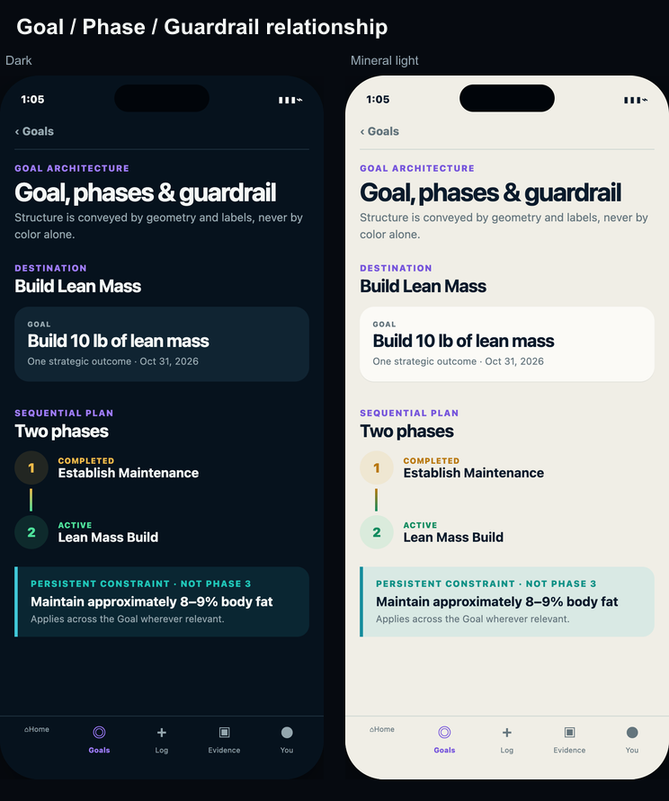
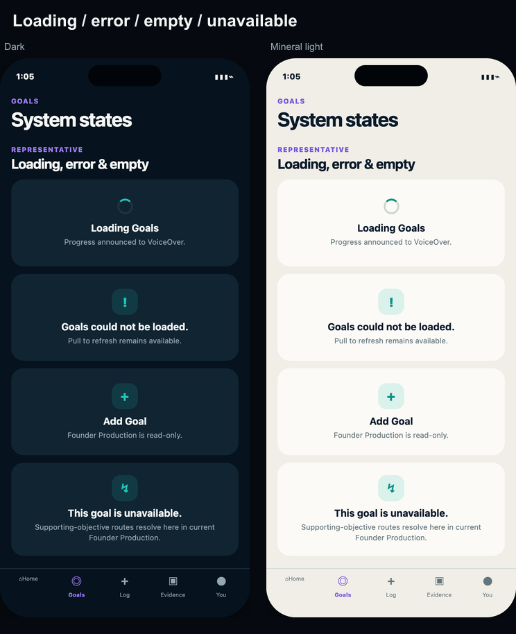

One locked-family translation across the full Goals hierarchy.
Exact current Goal content and chronology are preserved. Guardrail is a cross-phase constraint, completed Visible Abs keeps its authenticated first/final photo requirement, and dark/mineral-light copy parity is validator-checked.
Goals root

Active Build Lean Mass

Current + completed phase detail

Completed Visible Abs at Rest

Journey, photo requirement and relationship


